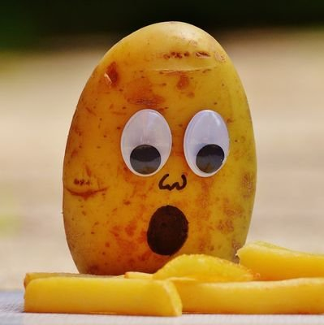

Welcome!
Are you a fan of starch? Potato chips? Perhaps french fries? You've come to the right place!
As a website dedicated to potatoes large and small, we do our best to provide quality content and innovative updates for enthusiasts around the globe. Feel free to browse our site to explore all we have to offer, and check back often for new additions! This is currently a work in progress that will be amended with new ideas in the coming weeks. It can only get better from here :).